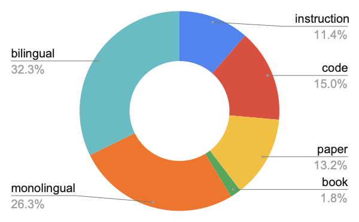
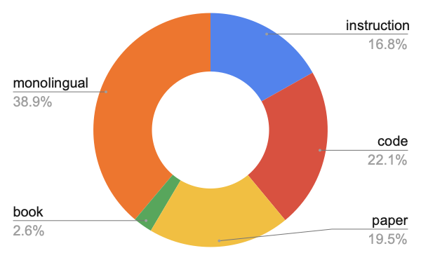
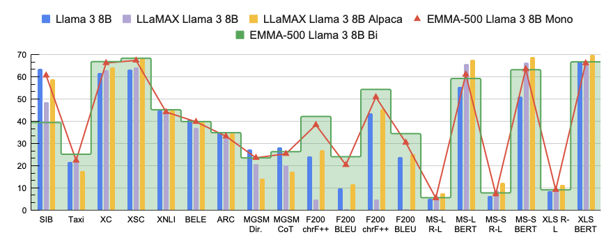
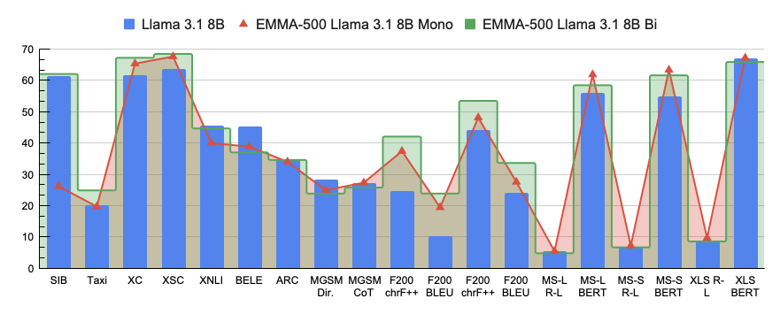
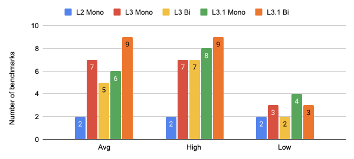

Abstract
This paper investigates a critical design decision in the practice of massively multilingual continual pre-training — the inclusion of parallel data. Specifically, we study the impact of bilingual translation data for massively multilingual language adaptation of the Llama 3 family of models to 500 languages. To this end, we construct a bilingual translation corpus named MaLA, containing data from more than 2,500 language pairs. Subsequently, we develop the EMMA Llama 3 suite of four massively multilingual models — continually pre-trained from the Llama 3 family of base models extensively on diverse data mixes up to 671B tokens — and explore the effect of continual pre-training with or without bilingual translation data. Comprehensive evaluation across 7 tasks and 12 benchmarks demonstrates that bilingual data tends to enhance language transfer and performance, particularly for low-resource languages. We open-source the MaLA translation corpus, EMMA Llama 3 suite artefacts, code, and model generations.
Overview
Multilingual language models pre-trained on massive data have promoted multilingual NLP. However, foundational English-centric models like Llama 3 often struggle with low-resource languages. The EMMA Llama 3 suite addresses this digital divide by scaling multilingual continual pre-training to over 500 languages. Specifically, we investigate a key design choice: does CPT with structured parallel data yield superior task generalization and multilingual robustness compared to training purely on monolingual mixes?
Key Contributions
-
1 Data: We compile a bilingual translation corpus for Massive Language Adaptation in more than 2,500 language pairs and 500 languages, namely the MaLA translation corpus.
-
2 Models: We train and release 4 models, namely EMMA Llama 3/3.1 Mono/Bi, by continually pre-training Llama 3 & 3.1 (8B) using both monolingual and bilingual MaLA corpus augmented with diverse data types, up to 671B tokens.
-
3 Evaluation: We conduct a comprehensive evaluation across 7 tasks and 12 benchmarks, ablating the impact of the two diverse data mixes and analyzing gains in task generalization and multilingual robustness.
Data Mixing & Composition
We blend the bilingual data with multilingual monolingual texts, scientific papers, books, instruction datasets, and code to create two distinct data mixes. The Bilingual Mix incorporates parallel bilingual data across various language resource levels, while the Monolingual Mix acts as an ablation baseline specifically omitting any bilingual data.


Continual Pre-trained Models & Settings
| Base Model | Data Mix | Model Name | Steps | Warmup | Tokens |
|---|---|---|---|---|---|
| Llama 3 (8B) | Monolingual |
|
25,000 | 1,000 | 419B |
| Llama 3 (8B) | Bilingual |
|
40,000 | 2,000 | 671B |
| Llama 3.1 (8B) | Monolingual |
|
25,000 | 1,000 | 419B |
| Llama 3.1 (8B) | Bilingual |
|
40,000 | 2,000 | 671B |
Evaluation Results
Monolingual vs. Bilingual Continual Pre-training
We ablate the performance impact of parallel bilingual texts on downstream tasks. Averaged across all evaluated languages, CPT with bilingual parallel data consistently outperforms monolingual CPT, especially on translation benchmarks (Flores200) and low-resource reasoning tasks.


Model Adaptability & Challenges
We observe that highly optimized base models (such as Llama 3 and 3.1) are inherently more resistant to further adaptation than Llama 2 base models. This creates a trade-off where adapting the model to many new low-resource languages can sometimes degrade high-resource language performance.

Key Findings
- • CPT using a data mix with bilingual translation data generally exhibits better multilingual performance than a monolingual mix, particularly in low-resource languages and in machine translation tasks that directly benefit from parallel data.
- • Heavily pre-trained models (e.g., Llama 3 and 3.1) that consume more training tokens than English-centric models (e.g., Llama 2) are more resistant to further adaptation when scaling to include many additional languages.
- • As for overall performance, comparing to strong baselines, our EMMA models are the best at machine translation (Flores200) and competitive at text classification (Taxi1500 and SIB-200) and commonsense reasoning (XCOPA and XStoryCloze).
- • EMMA CPT models exhibit a lower average accuracy on the BELEBLE comprehension benchmark, but they outperform baselines across a greater number of languages.
BibTeX
@inproceedings{ji-etal-2026-data,
title = "Data-Centric Continual Pre-training for 500+ Languages: A New Bilingual Translation Corpus and Multilingual Models",
author = {Ji, Shaoxiong and
Li, Zihao and
Paavola, Jaakko and
Luo, Hengyu and
Tiedemann, J{\"o}rg},
editor = "Liakata, Maria and
Moreira, Viviane P. and
Zhang, Jiajun and
Jurgens, David",
booktitle = "Findings of the {A}ssociation for {C}omputational {L}inguistics: {ACL} 2026",
month = jul,
year = "2026",
address = "San Diego, California, United States",
publisher = "Association for Computational Linguistics",
url = "https://aclanthology.org/2026.findings-acl.937/",
doi = "10.18653/v1/2026.findings-acl.937",
pages = "18776--18807",
ISBN = "979-8-89176-395-1",
abstract = "This paper investigates a critical design decision in the practice of massively multilingual continual pre-training {---} the inclusion of parallel data. Specifically, we study the impact of bilingual translation data for massively multilingual language adaptation of the Llama 3 family of models to 500 languages. To this end, we construct a bilingual translation corpus named MaLA, containing data from more than 2,500 language pairs. Subsequently, we develop the EMMA-500 Llama 3 suite of four massively multilingual models {---} continually pre-trained from the Llama 3 family of base models extensively on diverse data mixes up to 671B tokens {---} and explore the effect of continual pre-training with or without bilingual translation data. Comprehensive evaluation across 7 tasks and 12 benchmarks demonstrates that bilingual data tends to enhance language transfer and performance, particularly for low-resource languages. We open-source the MaLA corpus, EMMA-500 Llama 3 suite artifacts, code, and model generations."
}